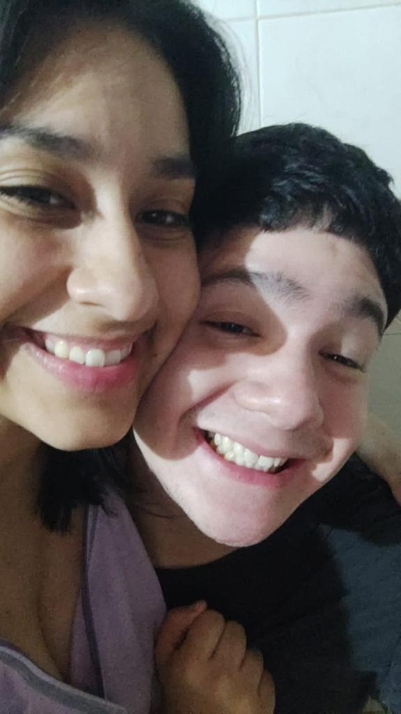

Nuestro radar de romance está en alerta máxima
Detalles Jugosos:
¡Chismes Recientes! ¡M se lanza al ruedo del amor y J es el afortunado!
¡Oh, la dulce melodía del amor en el Upper East Side! Micca y Juanjo, una pareja que desafía las expectativas. Pero, ¡cuidado!, Vanessa Abrams no está de acuerdo con esta relación, y parece que J ha rechazado vehementemente cualquier posibilidad. El odio de J hacia V ha desatado una tormenta en la élite de Manhattan, tejiendo una trama de desamor y desdén. Mientras V critica su relación, otros personajes como Chuck Bass y Serena Van Der Woodsen expresan su apoyo inquebrantable. Blair, la reina de los chismes, no se queda atrás y, entre susurros y miradas misteriosas, sugiere conexiones con el misterioso pasado de J. M, por otro lado, navega en el mar de la felicidad, explorando la pasión y la seguridad en los brazos de J. Entre amores perdidos, corazones rotos y secretos por descubrir, esta historia promete más giros inesperados. ¿Podrá el amor de M y J resistir la presión de la élite neoyorquina? ¿Qué oscuros misterios esconde la nueva conexión de M y J? La verdad siempre sale a la luz, Upper East Siders. Manténganse alerta, ¡la intriga apenas comienza!
Comentarios de los usuarios:
- "¡Esto es increíble! ¿Alguien más lo vio?"
- "Serán la pareja del año"
- "Que atractivo es J"
- "Vanessa jamas podrá estar con alguien tan hermoso como J"
- "Creo que la afortunada aqui es M"